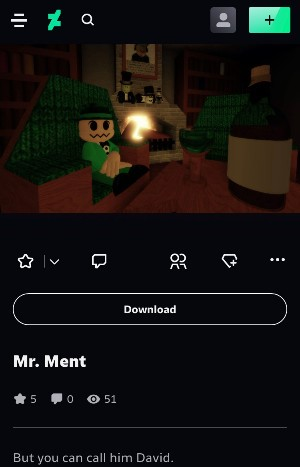
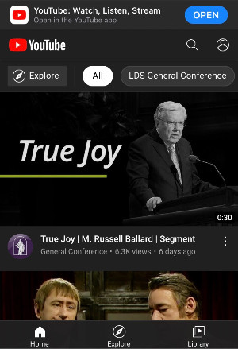
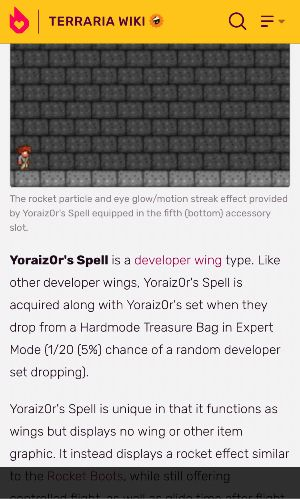

Contrast
DeviantArt
deviantart.com Even in the different color schemes that the site gives you, the color contrast is always strong enough so that you can read everything on the page without much of an issue.
Proximity
YouTube
youtube.com The channel icons, the video titles, and the miscellaneous information are close enough to the video thumbnails so that you know what information is related to what thumbnail.
White Space & Clean Design
Terraria Wiki (unofficial)
terraria.fandom.com The white space used in the site gives everything enough breathing room, and the overall design is simple and clean enough for you to see everything properly.